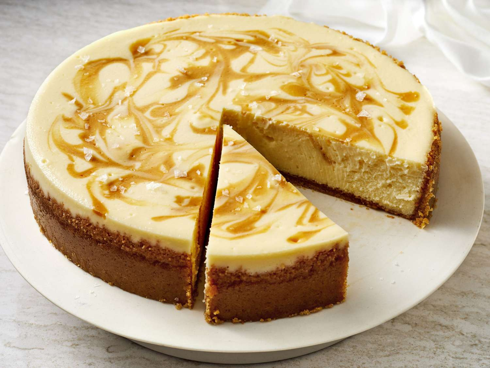

Cheesecake Recipe

Description
A classic cheesecake
Ingredients
- Brick cream cheese: Four 8-ounce bricks of full-fat cream cheese are the base of this cheesecake. That’s 2 pounds. Make sure you’re buying the bricks of cream cheese and not cream cheese spread. There are no diets allowed in cheesecake, so don’t pick up the reduced-fat variety!
- Sugar:
- Sugar: 1 cup. Not that much considering how many mouths you can feed with this dessert. Over-sweetened cheesecake is hardly cheesecake anymore. Using only 1 cup of sugar gives this cheesecake the opportunity to balance tangy and sweet, just as classic cheesecake should taste.
- Sour cream: 1 cup. I recently tested a cheesecake recipe with 1 cup of heavy cream instead, but ended up sticking with my original (which can be found here with blueberry swirl cheesecake!). I was curious about the heavy cream addition and figured it would yield a softer cheesecake bite. The cheesecake was soft, but lacked the stability and richness I wanted. It was almost too creamy. Sour cream is most definitely the right choice.
- A little flavor: 1 teaspoon of pure vanilla extract and 2 of lemon juice. The lemon juice brightens up the cheesecake’s overall flavor and vanilla is always a good idea.
- Eggs: 3 eggs are the final ingredient. You’ll beat the eggs in last, one at a time, until they are *just* incorporated. Do not overmix the batter once the eggs are added. This will whip air into the cheesecake batter, resulting in cheesecake cracking and deflating.
Steps
- Select a pie pan whose outside top dimension is at least 9", and whose height is at least 1 1/4".
- Preheat the oven to 350°F.
- Stir together all of the crust ingredients, mixing until thoroughly combined.
- Press the crumbs into the bottom and up the sides of the pie pan, making a thicker layer on the bottom than on the sides.
- To make the filling: Mix together the room-temperature cream cheese and sugar until smooth. Mix in the eggs and vanilla, again mixing until smooth. To avoid beat too much air into the batter, use a mixer set at low-medium speed. To avoid lumps, make sure the cream cheese is softened, and/or at room temperature.
- Set the pie pan onto a baking sheet, if desired; this makes it easier to transport in and out of the oven, and also protects the bottom of the crust from any potential scorching. Pour the filling into the crust.
- To bake the cheesecake: Place the cheesecake in the oven. Bake it for 20 minutes, then add a crust shield; or shield the crust with strips of aluminum foil. Bake for an additional 10 minutes (for a total of about 30 minutes). A digital thermometer inserted into the filling 1" from the edge should read between 165°F and 170°F; the filling won't look entirely set in the center.
- Remove the cheesecake from the oven and set it on a rack to cool. Once the cake is cool, refrigerate it, covered, until you're ready to serve it.